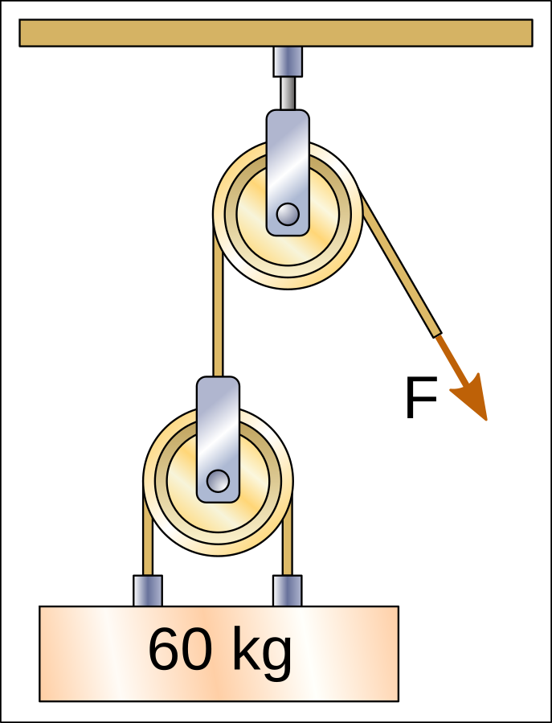
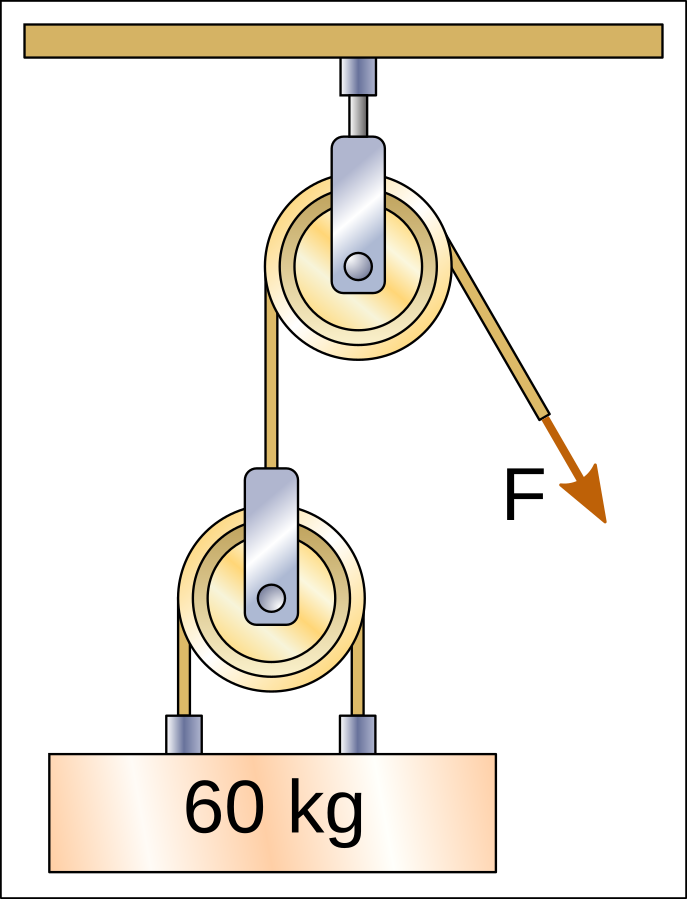
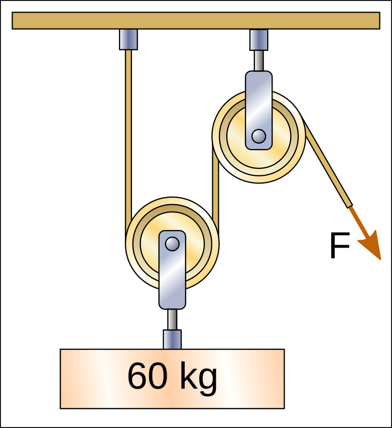
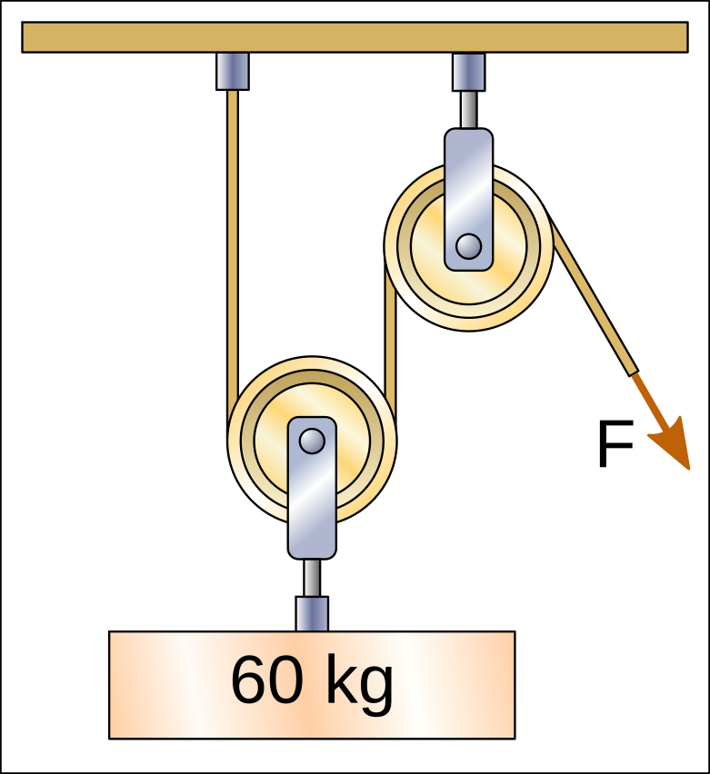
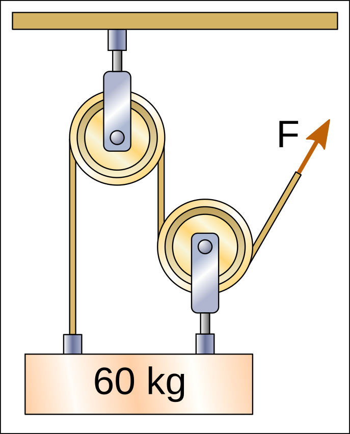
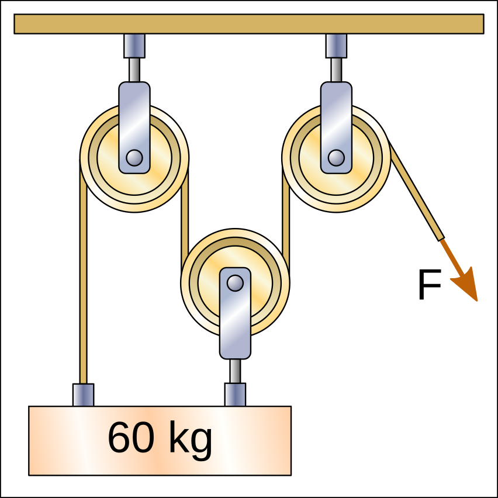
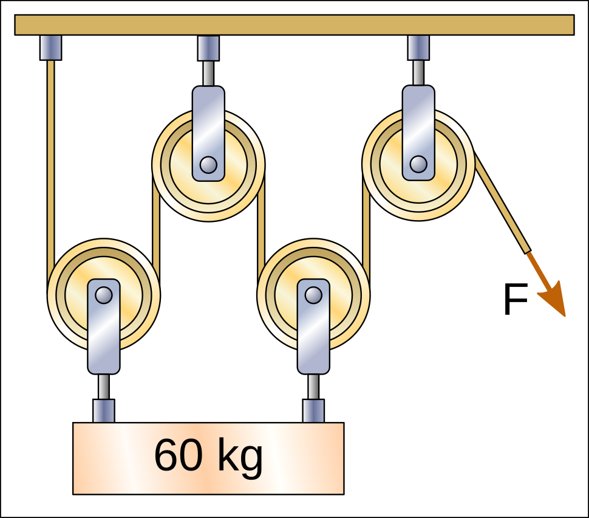
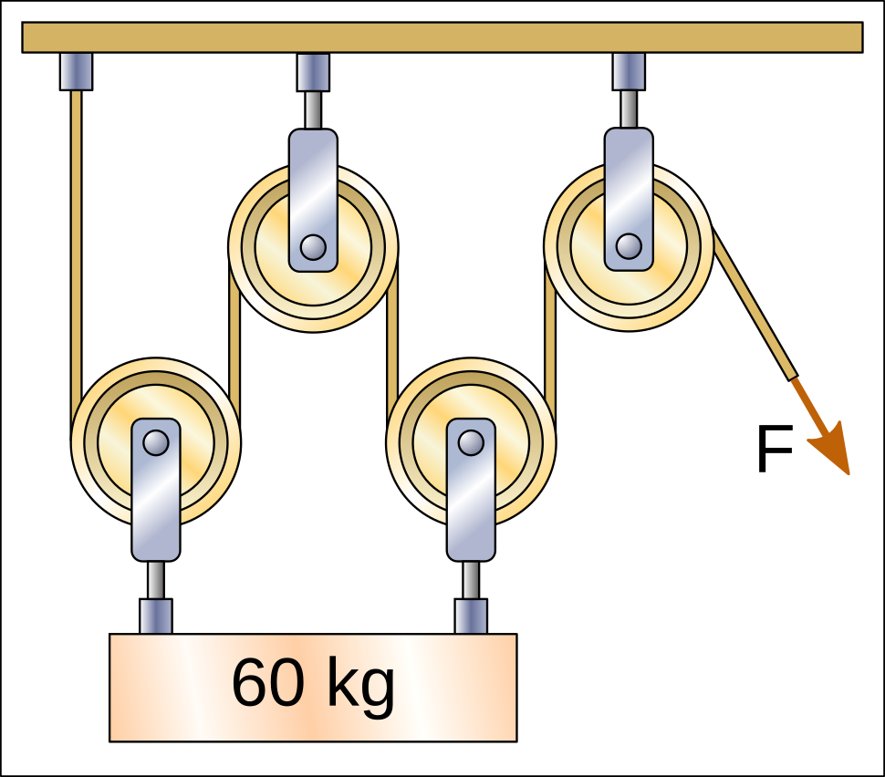
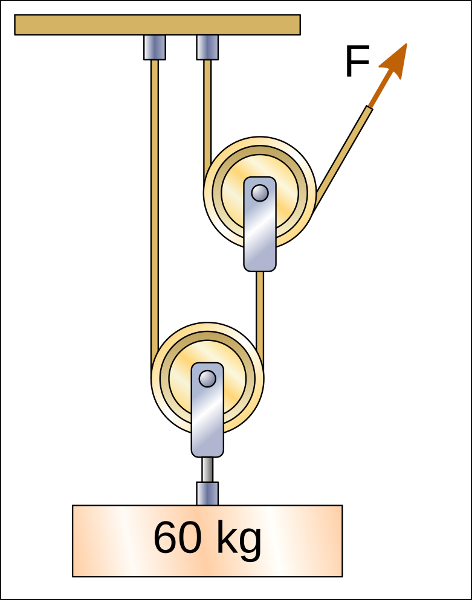

Pulleys and Hoists¶
A pulley is a simple machine made up of a grooved wheel through which a rope passes.
Pulley applications¶
The function of the pulley is to divert the direction and position of the rope and therefore of the applied tension force.
In this way the rope of a well can lift a bucket of water by pulling downwards away from the rim, which means an advantage in being able to pull from a more comfortable position.
Some curtains can be opened and closed by pulling two strings down, at the level of our hand. The function of the pulleys here is to move the force from the level of our hand to the ceiling, where the curtain rail is located.
 

{kind=link}

In all of the above cases, the pulleys divert the direction and position of the force, but do not reduce the force needed to lift the weight. Therefore all these pulleys need to stretch the end of the rope with a force of 60kgf (60 kilogram-force) in order to lift the weights.
Hoists¶
A hoist is made up of at least one mobile pulley, hooked to the weight to be moved. The hoist can lift weights with mechanical advantage, that is, it can lift a weight greater than the force applied to the rope.
To calculate the force required to lift the weight, you have to divide the weight by the number of lengths of rope that are pulling the weight up.
In the following hoists there are 2 sections of rope that pull the weight upwards and therefore the force that must be exerted to lift the weight is divided between the two sections, with a result of 30kgf.
 

{kind=link}
In the following hoists there are 3 sections of rope that pull the weight upwards and therefore the force that must be exerted to lift the weight is divided by three, with a result of 20kgf.
 {kind=link}
{kind=link}
In the following hoists there are 4 sections of rope that pull the weight upwards and therefore the force that must be exerted to lift the weight is divided by four, with a result of 15kgf.
 

{kind=link}
It must be taken into account that sometimes the pulleys are not attached to the weight and therefore do not count when calculating the force with which the rope must be pulled.
In the following hoist there are 2 sections of rope that pull the weight upwards and therefore the force that must be exerted to lift the weight is divided between the two, with a result of 30kgf.

In the following hoist there are 3 sections of rope that pull the weight upwards and therefore the force that must be exerted to lift the weight is divided by three, with a result of 20kgf.

Nested Hoists¶
One hoist can pull the rope of another hoist and in this case we have a nested hoist. Each of the hoists divides the force that must be exerted on the rope.
On the next hoist, the bottom pulley divides the 60kg weight between two lengths of rope, so the first rope will have a tension of only 30kgf.
The pulley above divides again between two sections of rope the force of the first rope, so the tension will be 15kgf. This will be the force F that must be exerted to raise the weight.
{kind=link}
Exercises¶
Pulley and hoist exercises to calculate the force with which we must pull the rope to lift a weight.